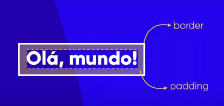
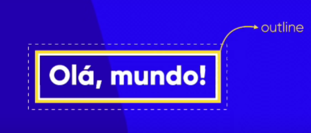
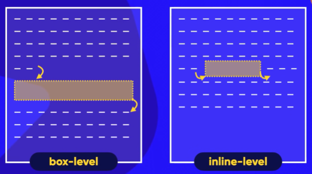

Height = altura;
Width = largura;
Borda (border): linha que circunda seu conteúdo.
Padding: acolchoamento ou preenchimento da borda.
O espaçamento que fica entre um padding e outro é chamado de margin, e pode também ser definido seu tamanho.
O outline é o traçado que contorna a border.
CHAT GPT: O outline é útil para melhorar a acessibilidade e a experiência do usuário ao preencher formulários, por exemplo.
Box-level: box-level sempre se inicia em uma linha nova; sempre ocupa a largura total da tela (100% vp).
O maior exemplo de box-level é uma div.
Inline-level: irá desenhar a caixa do tamanho que a linha ocupa (vai adaptar seu tamanho para que caiba) e depois que finaliza ele continuará na mesma linha; e só ocupa o tamanho necessário para caber dentro do elemento
Exemplo de inline-level é o <span>
